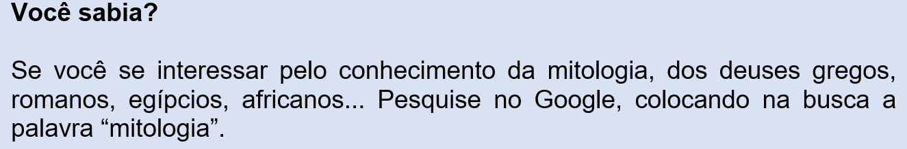
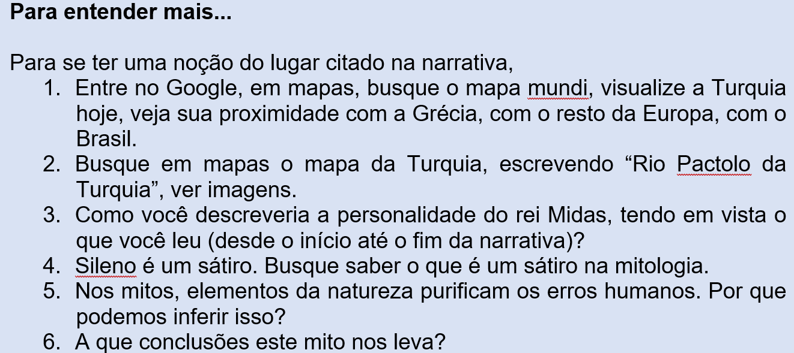

Capítulo 3: O homem, a máquina e a indústria metalúrgica
Questão-problema:
A indústria metalúrgica tem contribuído muito com a substituição do homem pela máquina. Até que ponto isso é positivo ou negativo?
Observe atentamente a imagem. Depois, acompanhe uma interpretação possível para ela:
1. Olhe a figura como um todo: no meio à natureza (repare o verde das plantas, o azul do céu) aparece (no primeiro plano) uma mão mecânica recebendo o pouso de uma borboleta.
2. Repare que a borboleta está envolta sob uma luz, como se esta acompanhasse seu pouso.
3. A mão mecânica tenta imitar – através de múltiplos fios, molas, articulações, texturas – a complexidade da mão humana.
4. Mas a mão não é humana, isto é, não pertence à natureza. Ela é produto da cultura humana, ela é fruto de uma sofisticada tecnologia.
5. A borboleta, ao contrário, é fruto da natureza. Comparada com a mão mecânica, ela é de uma simplicidade absoluta.
6. As duas, juntas, parecem formar uma dupla contraditória, opostas entre si.
7. Ao mesmo tempo, porém, a borboleta parece emprestar à mão artificial algo de humano, como um pouco de poesia, de sensibilidade, de alma.
8. E a mão artificial parece aconchegar a borboleta respondendo à suavidade recebida.
Reconstruindo conhecimentos:
Outro tipo de narrativa: A mitologia tentando explicar os mistérios da vida humana
A palavra “Mitologia” significa o estudo dos mitos. Simplificando muito a explicação, diria que:
Mito é um tipo de narrativa que existe desde que o homem começou a pensar (e isso nem se sabe quando). Os acontecimentos da vida e da morte, misteriosos para o homem, sempre aguçaram (e ainda aguçam) a sua curiosidade.
Na tentativa de compreendê-los e explicá-los, o homem inventou (e ainda inventa) muitas histórias, que chamamos de mitos.
Fenômenos universais e atemporais, como as emoções e o caráter humanos, com suas faltas, seus desejos e ambições, bem como a origem da vida, do sol, da chuva, do vento e a vinda para todos os mortais da morte, para tudo isso e muito mais os homens inventaram Mitos.
Sabendo-se finitos e acreditando na eternidade, inventaram (e acreditaram!) os deuses que, superiores a eles (homens e mulheres), eram imortais. Havia deuses para tudo: deus do sol (Apolo), deus do tempo (Cronos), deus dos deuses (Júpiter), deus dos mares (Netuno), deusa da agricultura (Ceres), deus do vinho e das festas (Baco) e muitos, muitos mais.
Os deuses não moravam na Terra. Moravam (a maioria) no Olimpo, bebiam o néctar das flores e comiam ambrosia. Esses seres imortais dispunham dos homens aos seus prazeres, e coitado daquele que quisesse ser melhor que um deus: eles o aniquilavam!
O espaço aqui é pequeno para saber tudo sobre a Mitologia. O importante é compreender que os mitos permanecem ainda entre nós porque suas histórias captaram o que existe de universal no Homem e na Natureza. Como você pôde ler, os deuses serviram de nomes para planetas, astros, estrelas do nosso universo, e muitas histórias míticas foram usadas por Freud para explicar comportamentos humanos.

Saiba também, no vídeo abaixo, pouco sobre mito de Narciso, recontado por Oscar Wilde:
O texto a seguir, escolhido para leitura, é um mito greco-romano cujo tema é a ambição desmesurada pela riqueza e suas consequências. Assim como a maioria dos mitos, a narrativa de Midas existe há mais de 2 mil anos!
Midas: O toque inglório do ouro
No meio da festa, tropeçando nos próprios pés, tonto de vinho, o velho Sileno partiu. Certamente não queria ir longe, pois gostava muito de participar das alegrias dos companheiros, mas a embriaguez turvava-lhe o senso de rumo e de distância, e acabou levando-o para uma floresta afastada, onde, à sombra das árvores, adormeceu. Assim surpreenderam-no alguns companheiros, que o reconheceram como fiel seguidor de Baco , e o levaram à presença de seu rei. Midas , o soberano ambicioso, vislumbrando a possibilidade de tirar algum proveito desse encontro, mandou preparar uma grande festa para Sileno e tratou-o com pompas dignas de um importante fidalgo. Dez dias e dez noites o palácio real abrigou o hóspede. Danças, cantos, vinhos e iguarias marcaram a passagem do tempo. Ao chegar ao décimo primeiro dia, Midas levou Sileno para Baco. E o deus, contente por rever o velho companheiro, decidiu recompensar o rei não só por trazê-lo de volta a seu convívio, mas também por tê-lo tratado com tão calorosa hospitalidade. Prometeu-lhe, então, realizar qualquer um dos seus desejos. Riquezas eram a grande paixão do soberano. Embora tivesse já uma fortuna invejável, desejava acrescer-lhe sempre mais, até tornar-se a criatura mais rica de toda a Terra. Assim, pois, formulou a Baco seu maior desejo: poder transformar em ouro tudo o que tocasse. Em sua sabedoria, Baco previu um mau futuro para o rei. Mas, como havia prometido, realizou o pedido. Sozinho, como para comprovar o poder de Baco, o rei apanhou uma pedra no chão e, mal a tocou com os dedos, viu-a transformar-se em ouro. Depois colheu um ramo de árvore, e as folhas verdes endureceram-se em sua mão, metálicas e douradas. Era a realização de seu grande sonho! Seria agora o homem mais rico do mundo, e ninguém poderia rivalizar com ele em grandeza e poder! Pela hora do almoço, a felicidade de Midas sofreu o primeiro abalo, como Baco previra. Ao apanhar o pão para cortá-lo, o soberano, com tristeza, percebeu que o alimento se transformara em ouro. Assim, aconteceu com as carnes, os legumes, as frutas – blocos rígidos e brilhantes. Amedrontado, o rei tentou beber água, mas nenhuma gota lhe chegou à garganta: ao contato de seus lábios, o líquido também virara metal. Não era isso que desejara, mas não soubera expressar-se, tão ansioso estava para enriquecer ainda mais. De nada lhe valia transformar tudo em ouro, se com tanta riqueza não podia comer, nem beber, nem descansar em leitos macios, nem mesmo acariciar as criaturas que amava. Então percebeu a insensatez de seu pedido. Apressou-se a procurar novamente o deus para suplicar-lhe que o livrasse de tão nefasto poder. Baco mandou-o lavar-se nas águas purificadoras do rio Pactolo, que corria pelas terras da Frígia . E, efetivamente, Midas perdeu o estranho dom. Abandonou suas riquezas, renunciou por completo à ambição material e passou a conviver modestamente com os pobres pastores e camponeses.
(Fonte: MITOLOGIA da Abril Cultural. Volume primeiro. São Paulo: Abril Cultural, 1973, p. 232.)

Praticando:
1. Assinale a alternativa cuja palavra em negrito tem valor conotativo:
(a) No meio da festa, tropeçando nos próprios pés, tonto de vinho, o velho Sileno partiu.
(b) ... mas a embriaguez turvava-lhe o senso de rumo e de distância...
(c) Danças, cantos, vinhos e iguarias marcaram a passagem do tempo.
(d) Riquezas eram a grande paixão do soberano.
(e) ... o rei apanhou uma pedra no chão e, mal a tocou com os dedos, ...
2. Observe a relação lógica que existe entre as palavras em negrito; depois responda o que o que se pede:
a) Se a palavra “longe” tem relação com a palavra “perto”, a palavra “alegrias” tem relação com
( ) prazeres ( ) tristezas ( ) festas ( ) divertimentos ( ) cansaços
b) Se a palavra “embriaguez” tem relação com “bebedeira”, a palavra “adormeceu” tem relação com
( ) dormiu ( ) sonhou ( ) acordou ( ) despertou ( ) sonambulou
c) Se a palavra “fiel” tem relação com “fidelidade”, a palavra “importante” tem relação com
( ) desimportante ( ) desinteressante ( ) importantíssimo ( )importância
d) Se a palavra “endureceram” tem relação com “tornar duro”, a palavra “enriquecer” tem relação com
( ) tornar rico ( ) empobrecer ( ) tornar pobre ( ) ter fortuna ( ) ter riqueza
3. Complete a lacuna e marque se a palavra que você escreveu é adjetivo ou substantivo:
Exemplo: Se alguém é fiel, diz-se que a pessoa tem fidelidade.
( ) adjetivo (x) substantivo
a) Se alguém é ambicioso é porque tem...............................
( ) adjetivo ( ) substantivo
b) Quem tem riquezas é ..............................
( ) adjetivo ( ) substantivo
c) Quem tem paixão dentro de si é uma pessoa ................................
( ) adjetivo ( ) substantivo
d) Quem tem fortuna é ...................................
( ) adjetivo ( ) substantivo
e) Quem tem sabedoria é ...........................
( ) adjetivo ( ) substantivo
f) Quem tem a felicidade dentro de si é uma pessoa .........................
( ) adjetivo ( ) substantivo
g) Tudo que é rígido tem em si ...........................
( ) adjetivo ( ) substantivo
h) Tudo que é brilhante tem .....................................
( ) adjetivo ( ) substantivo
i) Se alguém tem insensatez, diremos que é uma pessoa ...........................
( ) adjetivo ( ) substantivo
4. No trecho “Em sua sabedoria, Baco previu um mau futuro para o rei. Mas, como havia prometido, realizou o pedido”. Os três verbos em negrito estão no pretérito, mas todas não aconteceram ao mesmo tempo.
a) Qual a que aconteceu primeiro?
b) Qual foi a segunda ação?
c) Qual foi a terceira ação?
5. Neste mesmo trecho, a ação primeira, por isso mais antiga, é chamada de pretérito mais-que-perfeito do indicativo e ela pode ser substituída por
(a) Previra.
(b) tinha previsto.
(c) prometera.
(d) realizara.
(e) havia realizado.
6. No trecho “o soberano, com tristeza, percebeu que o alimento se transformara em ouro.” O que aconteceu antes?
(a) A ação de o soberano perceber a modificação do alimento.
(b) A ação de o alimento ter se transformado em ouro.
7. Que nome se dá à ação passada anterior a outra ação também passada?
(a) Pretérito imperfeito.
(b) Pretérito perfeito.
(c) Pretérito mais-que-perfeito.
8. No trecho “Baco mandou-o lavar-se nas águas purificadoras do rio Pactolo, que corria pelas terras da Frígia.” Pensando na questão “tempo”, assinale a alternativa correta:
(a) A ação de “mandar” é pretérita e a ação de “correr” também o é.
(b) A ação de “mandar” é pretérita, mas Midas banhou-se uma vez só; a ação de “correr” também é pretérita, mas é duradoura, contínua.
(c) A ação de “mandar” é pretérita e contínua; a ação de “correr” também o é.
(d) As ações de “mandar” e de “correr” são pretéritas perfeitas.
(e) As ações de “mandar” e de “correr” são pretéritas imperfeitas.
O que aprendi:
- Mito é um tipo de narrativa que existe desde que o homem começou a pensar (e isso nem se sabe quando). Os acontecimentos da vida e da morte, misteriosos para o homem, sempre aguçaram (e ainda aguçam) a sua curiosidade. Na tentativa de compreendê-los e explicá-los, o homem inventou (e ainda inventa) muitas histórias, que chamamos de mitos.
- Lemos o mito de Midas, a desventura de um homem ambicioso demais.
Também relembramos que:
- Os significados das palavras, o valor denotativo, isto é, aquele que encontramos no dicionário, e o valor conotativo quando uma palavra assume outro significado, que foge da definição primeira do dicionário.
- As palavras podem denunciar – inferir – outros significados que não estão escritos.
- As palavras que dão nome às coisas são substantivos, e que aquelas que qualificam essas coisas são adjetivos.
- Os três tipos de pretéritos do modo indicativo: o imperfeito, o perfeito e o mais-que-perfeito.